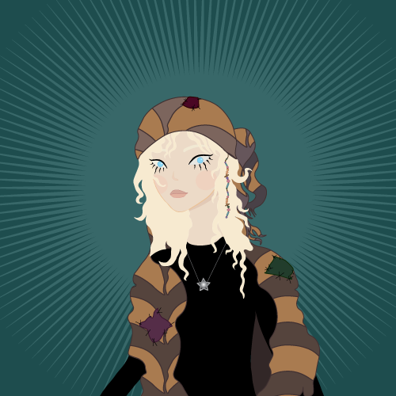

This story will be about her... the poor girl Aino. She lives in the small village in Norway in the family that hates her, but now it's not a big of a deal for her. She reaized, that she doesn't have to live in this boring, cruel and grey world. She created her own. It's Aiono's Perfect Universe.
